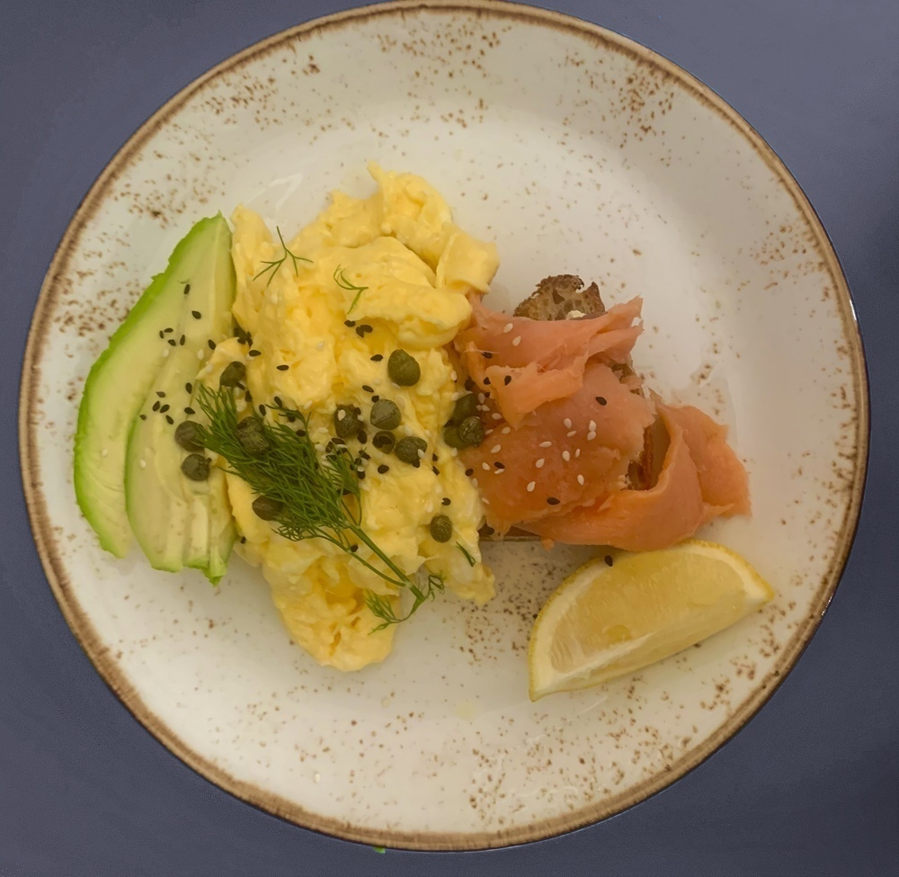

Learn how to make this super easy breakfast egg toast recipe,
it's one of my favorite breakfast recipes as its quick, healthy, and delicious!

INGREDIENTS
2 eggs
100g smoked salmon
1 tbsp capers
½ avacado
2oz cream cheese
½ lemon
1 sourdough bread slice
salt & pepper to taste
sesame seeds
3 tbsp cream
INSTRUCTIONS
by making the marinadeing the chicken, combine the mustard, orange
juice, honey, vinegar, salt, and pepper in a bowl.
Add the chicken breasts into the marinade, and let them marinade for atleast
30 minutes.
Using a vegetable peeler, slice the cucumber into thin ribbons.
Cut the onion into half moons and slice the strawberries into thin slices.
To make the dressing, combine the ornage juice, mustard, honey, and salt in
a bowl. Then emulsify the mixture by addding the olive oil in a low steady
stream whisking all the while.
Heat up a indoor or outdoor grill, and place the chicken onto it adding half
of the marinade. Allow the chicken to cook for around 5-7 minutes each side
or until the internal temperature reaches 165F (74C).
Once the chicken is fully cooked take it off the grill, and let it rest
while you prepare the rest of the salad.
In a bowl, toss together the arugula, cucumber ribbons, sliced strawberries,
onion half moons, as well as the dressing.
Slice the chicken and toss in with the rest of the salad and serve!